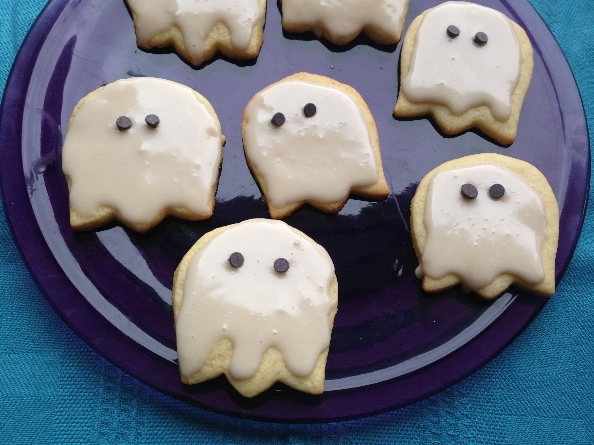

Halloween Ghost Cookies

Description
All you need for these ghost cookies is a cookie cutter in the shape of a tulip and then turn it upside-down -
if you don't have that one, you can easily freehand the ghost shapes. These are great giveaways for
trick-or-treaters and a nice alternative to all the candy.
Ingredients
- 1 cup butter
- 1 ½ cups confectioners' sugar
- 1 egg
- 1 teaspoon vanilla extract
- 2 ½ cups all-purpose flour
- 1 teaspoon baking soda
- 1 teaspoon cream of tartar
- ¼ teaspoon salt
Icing Ingredients
- 1 cup confectioners' sugar
- 2 teaspoons milk, plus more if needed
- 2 teaspoons light corn syrup, or more as needed
- ¼ teaspoon vanilla extract
- 1 (12 ounce) package miniature semisweet chocolate chips
Steps
- Beat butter in a bowl with an electric mixer until creamy. Add 1 1/2 cups confectioners' sugar gradually, beating until
light and fluffy. Beat in egg and 1 teaspoon vanilla extract.
- Combine flour, baking soda, cream of tartar, and salt in a second bowl. Add flour mixture to the creamed butter mixture
and mix to combine. Wrap in plastic wrap and chill in the refrigerator for at least 1 hour.
- Preheat oven to 400 degrees F (200 degrees C).
- Dust a work surface with flour and roll out dough into a thin circle. Cut out tulip shapes; if your tulip cookie cutter
has a stem, cut the stem off with a knife, so you have a stemless tulip shape. Arrange cut-out cookies on ungreased
baking sheets.
- Bake in the preheated oven until lightly browned, 6 to 8 minutes. Remove from baking sheets carefully and transfer to
wire racks. Cool completely, about 15 minutes.
- Stir 1 cup confectioners' sugar and milk together in a small bowl until smooth. Beat in corn syrup and 1/4 teaspoon
vanilla extract until icing is smooth and glossy. Add more corn syrup if icing is too thick.
- Spoon icing into a piping bag with a small plain tip. Pipe icing around the edge of each cookie to create a border.
Fill in the middle completely with icing. Stick 2 chocolate chip cookies into the wet icing for the eyes. Let cookies stand
until icing dries, about 1 hour.